Work, Cowork style
Owner 2026-11-28: Work should choose its project or folder, organize sessions by project, drop T3’s threads and worktrees language, and lose the band’s redundant plus. Decisions and what ships first: README.md.
Work home
A greeting, one composer, Project or folder under it, three starters. Recent files is slice 2.
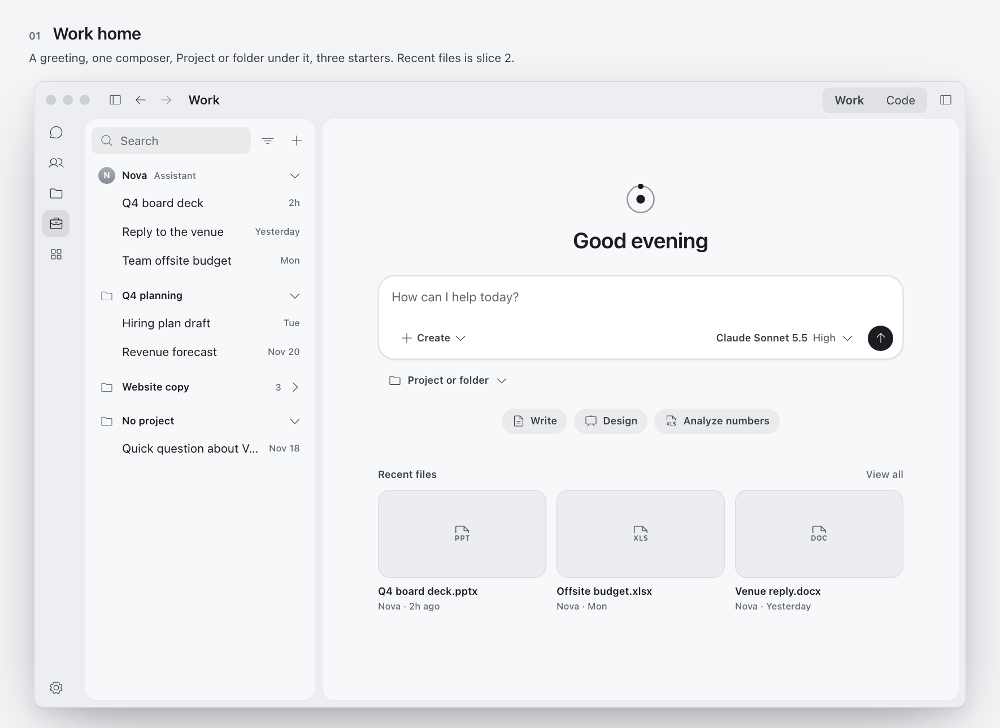
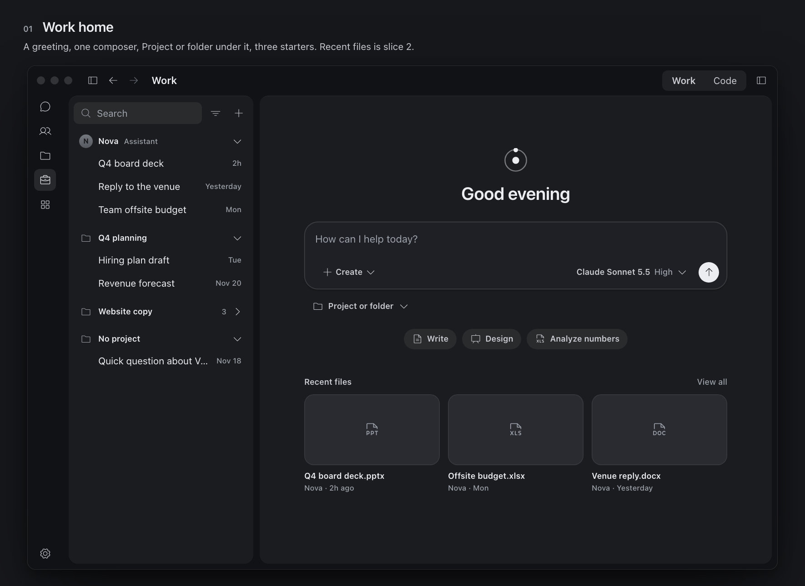
Project or folder
The project chip lists every project (each assistant has one) and Choose a folder… for any Mac or Drive folder.
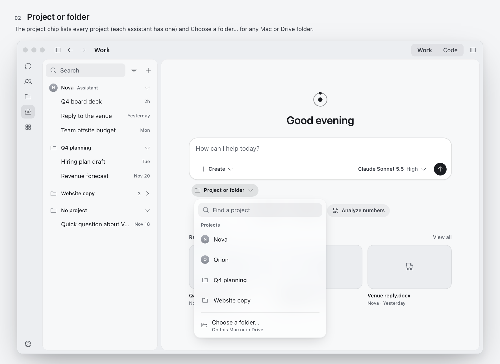
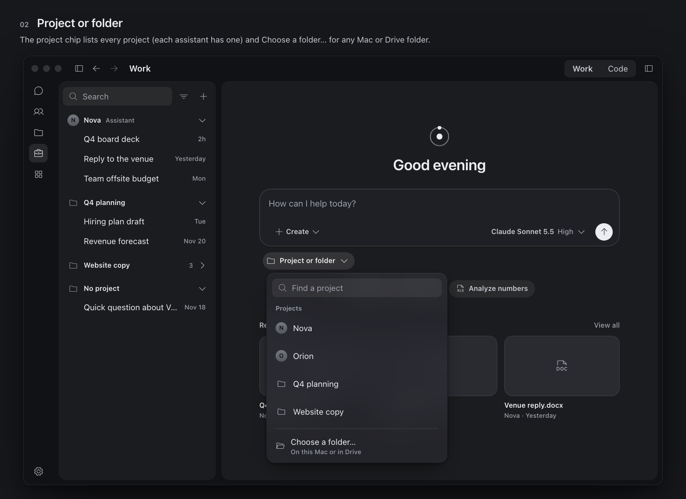
Sessions by project
The list groups sessions under their project, newest first; a closed project shows its count. The list’s + is the one New.
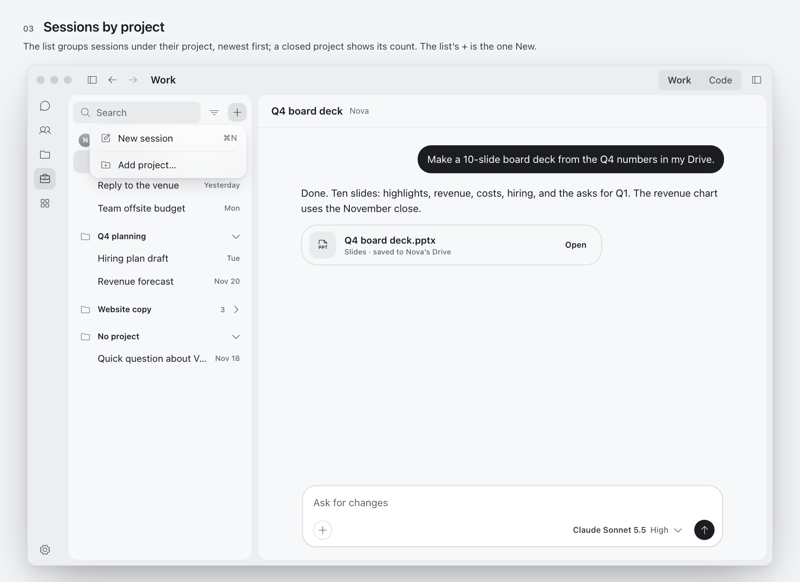
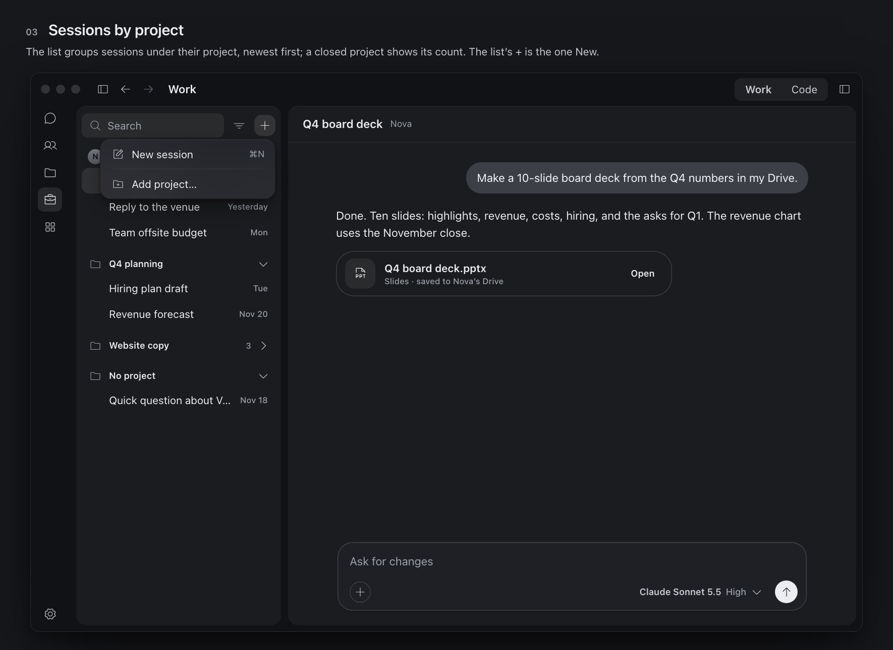
The title band’s plus
The band’s + opened the same menu as the list’s +. It goes; Work keeps one New, on the list.
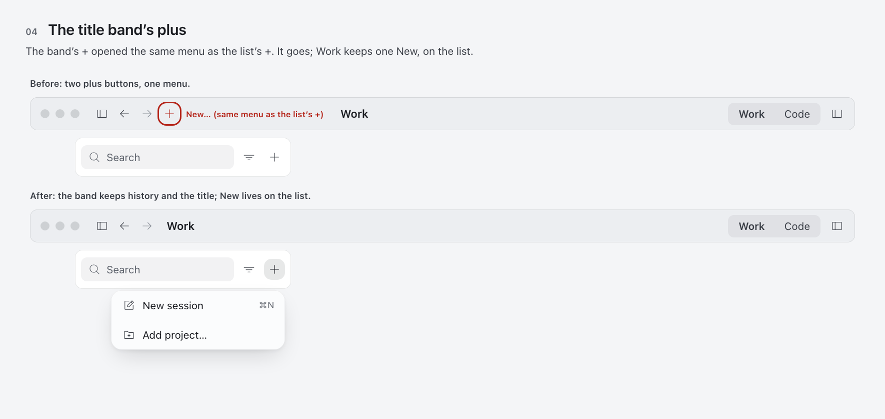
Built: the real Work view
Screenshots from atum-work’s browser tests (branch feat/work-cowork-projects) on T3’s test harness, so without the Atum theme or the desktop band. Recent files is not built yet.
No-project home: greeting, composer, Project or folder, starters.
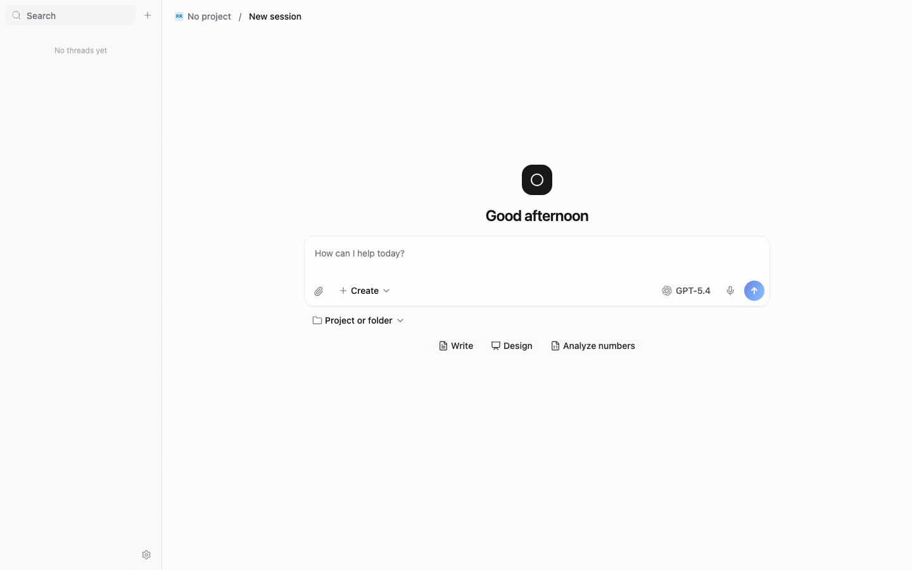
The chip open on a project draft: projects and Choose a folder…
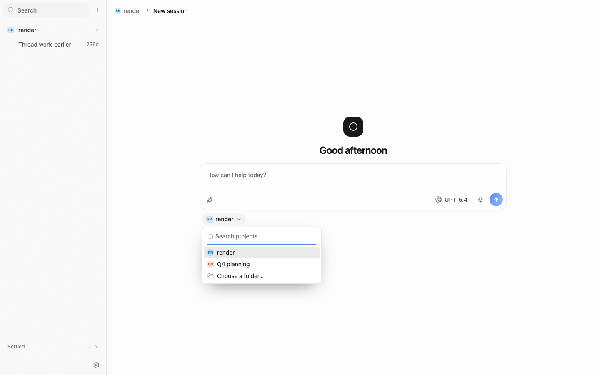
The same, dark.
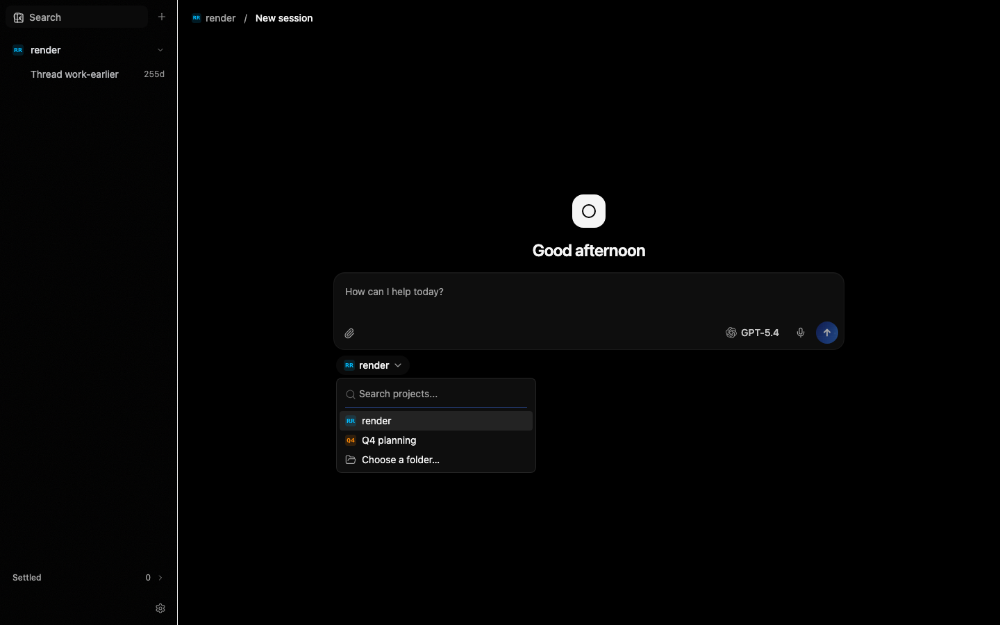
The list grouped by project; the list’s + offers New session and Add project.
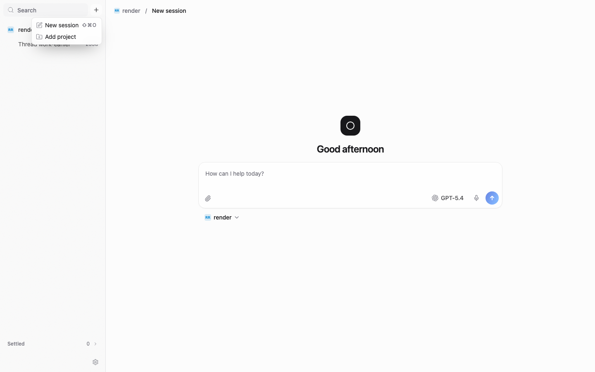